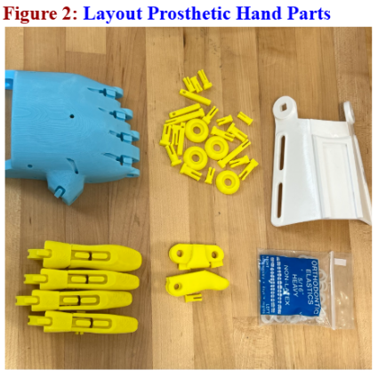
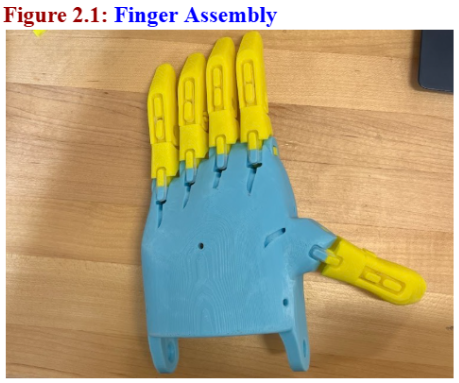
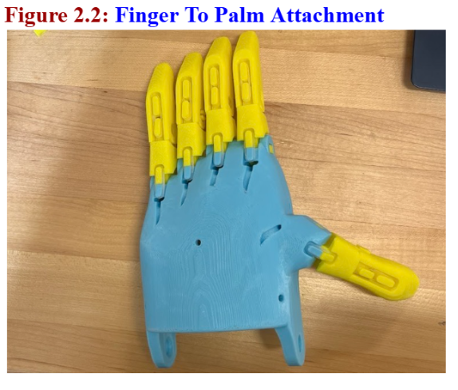
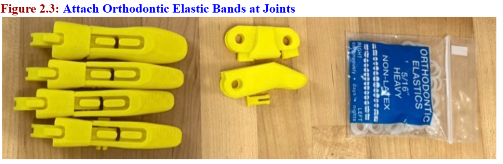
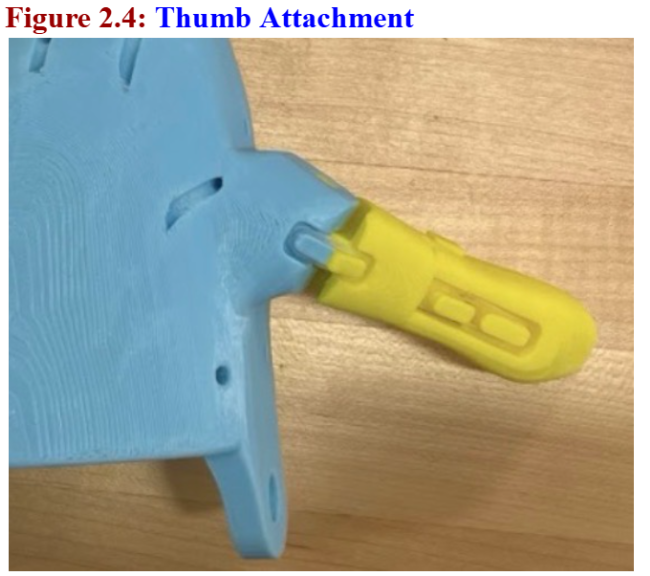
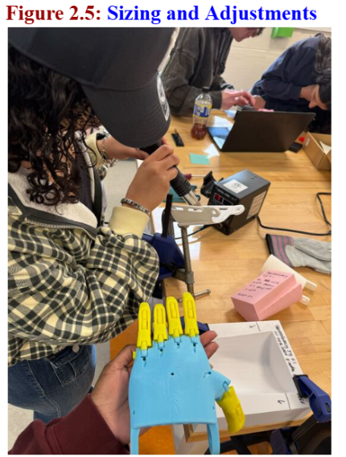
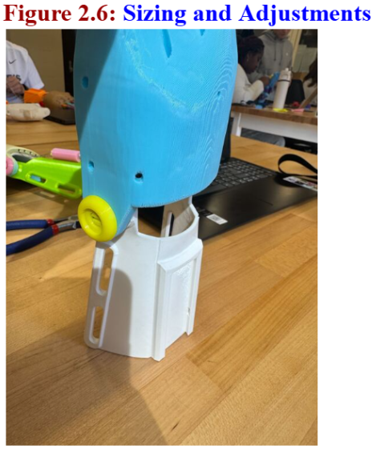
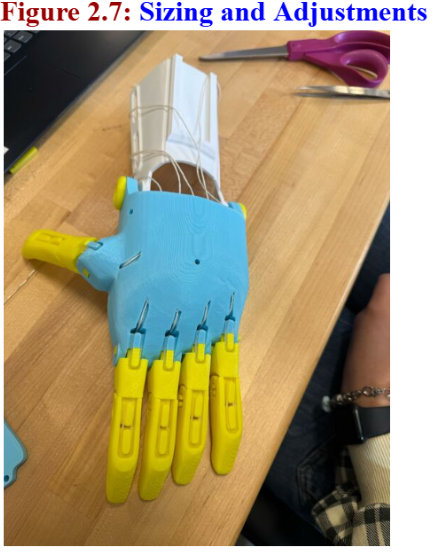
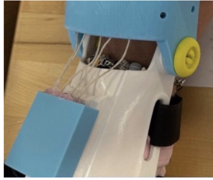

My partner and I printed the Phoenix Hand at 150% scale. We carefully layed out all the printed pieces: palm, fingers (thumb, pointer, middle, ring, pinky), finger pins, screws, gauntlet (forearm piece), cuff, elastic cords, and tension strings. Keep tools nearby (screwdriver, pliers, clamp, heat source).

Step 1: Assemble Each Finger; Take one finger at a time (3 segments per finger). Align the joints so the holes line up. Insert pins through each joint to connect the segments. Attach an orthodontic elastic rubber band at the joints. Repeat for all fingers and the thumb. Make sure each finger bends smoothly after assembly.

Step 2: Attach Fingers to the Palm; Line up each completed finger with its slot on the palm. Insert pins through the palm and finger base to secure them. Check that all fingers can open and close freely.

Step 3: Install Elastic (Finger Return System); Thread elastic cord through the back of each finger and into the palm. Tie off the elastic so it pulls the fingers back open after being flexed.Test by bending fingers—they should return to an open position.

Step 4: Attach the Thumb; Position the thumb on the palm at the correct angle. Secure it using pins or screws (depending on design). Ensure it can move slightly and align with the fingers for grip.

Step 5: Attach and Shape the Cuff; Position the cuff around the gauntlet. Use a clamp (like an Irwin Quick-Grip) to hold it in place. Apply controlled heat (heat gun or soldering tool) to gently shape it. Insert a pin on one side first, then mold and secure the other side. Make sure the cuff fits snugly.

Step 6: Connect the Gauntlet (Forearm Piece); Align the gauntlet with the palm connection point. Secure using screws. This piece will transfer wrist movement into finger motion.

Step 7: String the Fingers (Tension System); Thread string from each fingertip through the finger channels and into the palm and gauntlet. Pull the string tight to create tension. Tie knots while maintaining tension. Use a screwdriver to wedge the knot in place and prevent slipping. Add a small drop of hot glue if needed.

In class, we exchanged our documentation with Gerardo’s team. Although they found the written instructions clear, we noticed they struggled with positioning the screwdriver when seating the knots, revealing that we had assumed the “angle of entry” was obvious. Reflection & Revision: After observing their process, we updated our guide to include a specific note on using the wire as a lever rather than simply pushing. We also evaluated the peer documentation using the Documentation Literacy Framework, rating it highly for "Findability" but noting that the photo annotations could be improved for clearer visual logic.
